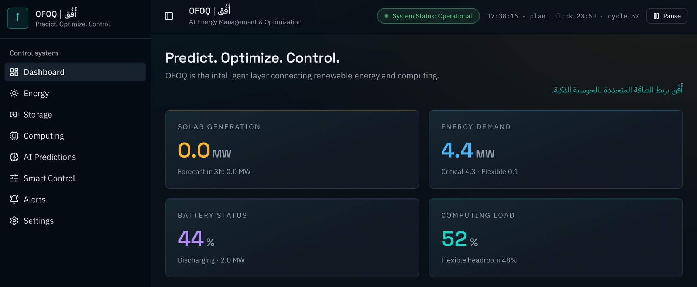

مراكز البيانات
لا تنام.
خدمات الذكاء الاصطناعي تعمل على مدار الساعة. والطلب العالمي على كهرباء مراكز البيانات يتجه من نحو 485 TWh في 2025 إلى 950 TWh بحلول 2030.
لا نوقف الحوسبة،
بل نجعلها تتكيّف مع الشمس.
خدمات الذكاء الاصطناعي تعمل على مدار الساعة. والطلب العالمي على كهرباء مراكز البيانات يتجه من نحو 485 TWh في 2025 إلى 950 TWh بحلول 2030.
الإنتاج الشمسي يتغير مع الوقت والموقع والغبار والحرارة. وذروته لا تتوافق دائمًا مع ذروة الطلب على الحوسبة والتبريد.
تدريب النماذج ومعالجة البيانات والمحاكاة تُشغَّل الآن، والبطارية تُشحن من الفائض.
الأحمال الحرجة والتبريد الأساسي محميّة دائمًا. السؤال: من أين تأتي طاقتها؟
يجدول أُفق ما يمكن تأجيله، ويحفظ الطاقة المخزّنة للحرج، ويتعلّم من اليوم ليتنبأ بالغد أدق.
تابِع لترى الحساب الكامل لهذا اليوم.
الفرق الوحيد: من يقرر متى تعمل الحوسبة المرنة، ومتى تُشحن البطارية أو تُفرَّغ. اختر ظروف اليوم:
نموذج توضيحي بقيم مفترضة: ذروة شمسية 10 MW، أحمال حرجة 4.3 MW، 18 MWh من المهام المرنة يوميًا، بطارية 12 MWh بقدرة 3 MW.
بيانات الإشعاع الشمسي والطقس والطاقة والبطاريات والشبكة والتبريد واستهلاك مركز البيانات.
MEASUREبالإنتاج الشمسي والطلب المتوقع خلال الساعات القادمة.
PREDICTحالة النظام، ويقارن السيناريوهات لاختيار الطريقة الأكثر كفاءة لتوزيع الطاقة.
ANALYZEشحن أو تفريغ البطارية، تشغيل الأحمال المرنة، إعادة جدولة المهام، ضبط التبريد، أو الاعتماد على الشبكة عند الحاجة.
DECIDEمن نتائج التشغيل الفعلية لتحسين التنبؤ والقرارات المستقبلية.
LEARNوكلاء ذكاء اصطناعي بصلاحيات محددة. ينفّذون مهامًا تشغيلية وفق ضوابط مسبقة، مع مراجعة بشرية للقرارات الحساسة.
مشاريع طاقة متجددة جديدة وقّعتها المملكة في 2025.
12 GW شمسي · 3 GW رياح
TWh بين 2025 و2030، والذكاء الاصطناعي أحد أهم محركات هذا النمو.
المصدر كما ورد في عرض المشروع: وزارة الطاقة السعودية، وصندوق الاستثمارات العامة.
نظام تخزين الطاقة: يخزّن الطاقة الفائضة لاستخدامها عند الحاجة.
نظام إدارة الطاقة: يدير الطاقة والتخزين وفق قواعد وأنظمة تشغيلية.
يربط الإشعاع الشمسي والطاقة والتخزين والتبريد والحوسبة، ويستخدم الذكاء الاصطناعي للتنبؤ واختيار أفضل قرار تشغيلي.

يحاكي أُفق دورة اتخاذ القرار الذكي: من مراقبة الطاقة والتنبؤ بالإنتاج والطلب، إلى اختيار القرار التشغيلي ومتابعة أثره.
إثبات الفكرة ومحاكاة القرارات.
MVPعلى مركز بيانات مع الطاقة الشمسية والتخزين والتبريد.
PILOTالتكامل مع الشبكة ومصادر الطاقة الموزعة، ثم مواقع ومراكز بيانات متعددة.
SCALEيقرر متى وأين تُشغَّل الأحمال والتخزين وفق توفر الطاقة.
خطة تطوير أمنية منفصلة: طبقة تتحقق من القرارات التشغيلية قبل تنفيذها.